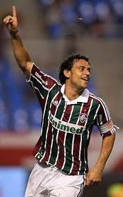
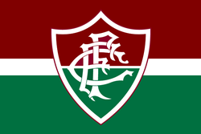

Galeria de Ídolos
Clique no coração para favoritar seu ídolo! ❤️

Fred

Thiago Silva

Germán Cano
Você favoritou 0 ídolo(s).

O Fluminense Football Club, fundado em 1902 e sediado no histórico bairro das Laranjeiras, é um dos clubes mais tradicionais e vitoriosos do futebol brasileiro. Conhecido como o "Tricolor das Laranjeiras", o clube ostenta uma rica história marcada por quatro títulos do Campeonato Brasileiro e, mais recentemente, a conquista da Copa Libertadores da América em 2023. Com uma das categorias de base mais produtivas do mundo, carinhosamente chamada de "Xerém", o Fluminense é reconhecido pela elegância de sua identidade visual e por uma torcida apaixonada que mantém viva a tradição do "pó de arroz".
| Ano | Título | Competição |
|---|---|---|
| 1970, 1984, 2010, 2012 | Campeão | Brasileirão |
| 2023 | Campeão | Libertadores |
| 2024 | Campeão | Recopa Sulamericana |
| 2007 | Campeão | Copa do Brasil |
| 1952 | Campeão | Copa Rio Intercontinental |
Clique no coração para favoritar seu ídolo! ❤️

Fred
Thiago Silva
Germán Cano
Você favoritou 0 ídolo(s).
Pergunta 1 de 5